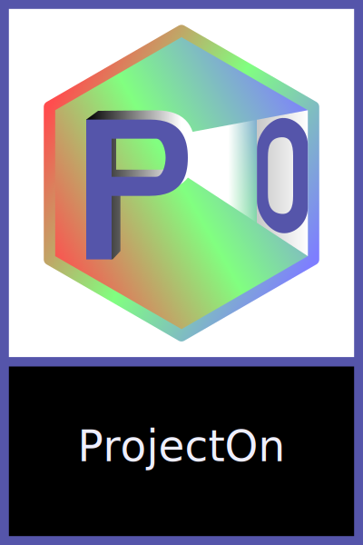
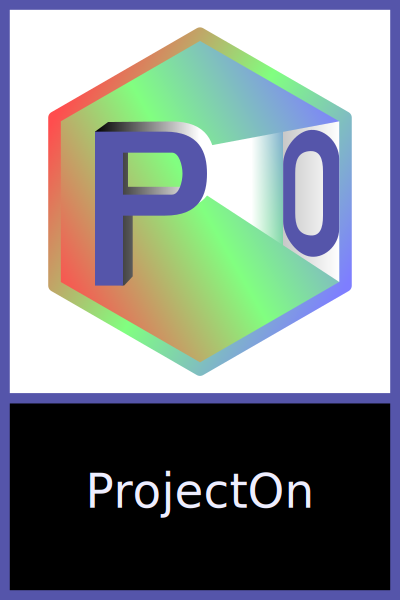

SpeeD ReaD helps you to read faster and more efficiently. By minimizing subvocalization and saccades, you can process and comprehend the text you read much faster than with normal reading.
First, subvocalization is the natural tendency for all of us to "hear" the words in our brains as we read. Think of it as reading out loud inside your head. But our minds do not need us to sound out the words we read - even inside our heads - in order to understand them. The words can be processed in a fraction of the time it takes us to sound them out. SpeeD ReaD forces you to simply comprehend words by sight.
Additionally, as we read blocks of text on a screen or in a book, our eyes tend to vacillate between rapid movements (saccades), as we move to the next word, and stops, as we focus on a word. By showing each word in the same area of the screen, SpeeD ReaD eliminates those unnecessary eye movements.
Currently, SpeeDReaD is available for the Microsoft Windows operating system only. Download the current SpeeDReaD installer (v.2.1.2) and run it on your computer.
This information will get you started, but for more in-depth information on using SpeeDReaD, please click “Help” and “Help Topics” in the menu.
When you first run SpeeDReaD, you’ll be greeted with a large reading area and a control panel at the bottom of the screen.
In this control panel, you have a variety of buttons for various functions: an add/change text function where you can paste text or import text from an epub file, a play/pause button and a stop button, and a settings button, which will open a popup where you can change the program's settings.
In addition to the buttons, you also have two sliders. The longest one scrolls through the words of the text you are reading while the shorter one in the bottom-left changes your reading speed.
There are various changes that can be made to how SpeeDReaD works. By clicking the settings button you can change such things as:
There are a few Shortcut Keys that can be used when using the program:
| Key | Function | Description |
|---|---|---|
| Ctrl-R | Start/Pause | Start or pause reading |
| Ctrl-Up | Faster | Increase reading speed |
| Ctrl-Down | Slower | Decrease reading speed |
| Ctrl-Left | Previous Word | Go to the previous word |
| Ctrl-Right | Next Word | Go to the next word |
| Backspace | Stop | Stop and return to the beginning of the text |
 SpeeDReaD is licensed under the GNU General Public License (GNU GPL)
published by the Free Software Foundation, either version 3 of the
License, or (at your option) any later version. See
http://www.gnu.org/licenses/
.
SpeeDReaD is licensed under the GNU General Public License (GNU GPL)
published by the Free Software Foundation, either version 3 of the
License, or (at your option) any later version. See
http://www.gnu.org/licenses/
.